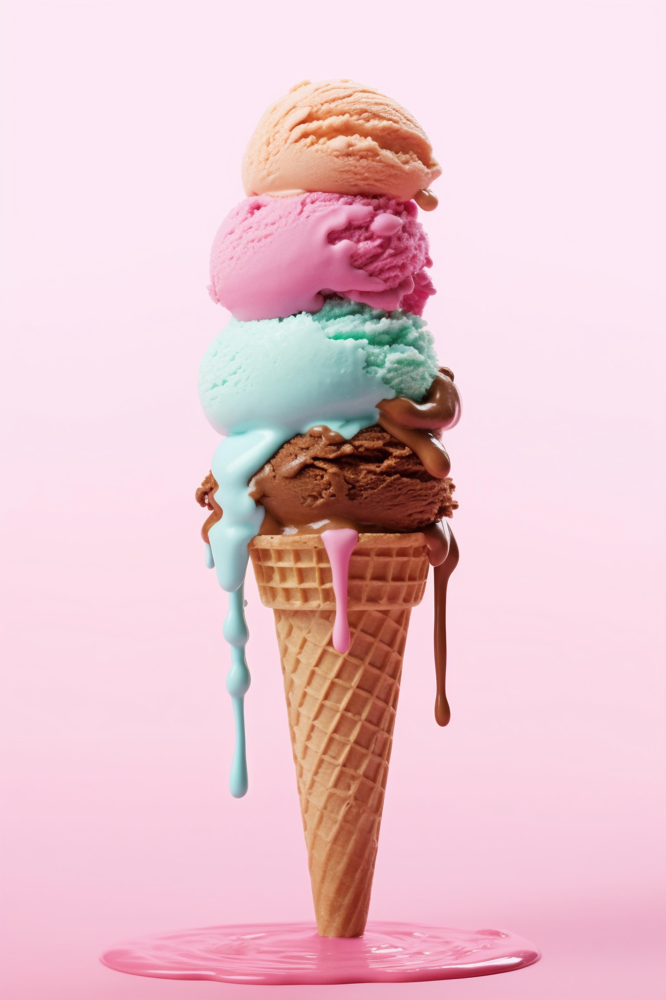

Ice Cream

Ingredients
- 2 cups heavy cream (or fresh cream)
- 1 cup whole milk
- ¾ cup granulated sugar
- 1 tablespoon vanilla extract
- A pinch of salt
Steps
- Mix the Ingredients
- In a large bowl, whisk together heavy cream, milk, sugar, vanilla extract, and salt.
- Stir until the sugar is completely dissolved.
- Chill the Mixture
- Cover the bowl and place it in the refrigerator for at least 2 hours (or overnight for better flavor).
- Churn the Ice Cream (Using an Ice Cream Maker)
- Pour the chilled mixture into an ice cream maker and churn according to the manufacturer's instructions (about 20–25 minutes).
- Freeze the Ice Cream
- Transfer the churned ice cream into a container.
- Cover and freeze for 4–6 hours until firm.
- Serve and Enjoy!
- Scoop the ice cream into bowls or cones.
- Add toppings like chocolate syrup, sprinkles, or nuts.